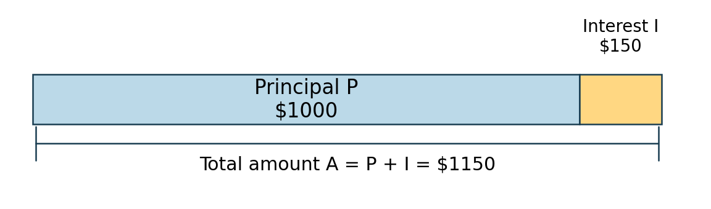
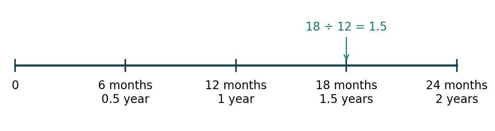

Lesson 4: Developing the Simple Interest Formula
Year level: Year 10 (middle ability set)Duration: 60 minutesFocal concept/topic: Simple interest: original principal, constant growth, annual rates and time units | |
Lesson aim: Build I = Prn from equal yearly interest, then use the formula for whole years and months. Students distinguish the interest earned from the total amount and explain errors in the choice of rate, time and calculation base. | |
Learning intention: We are learning to explain how simple interest grows, establish I = Prn, and calculate interest and total amount for a stated saving period. Success criteria: □ I can explain why simple interest is calculated on the original principal each year. | |
Syllabus outcomes and content: NSW Mathematics K–10 Syllabus (NESA, 2022a).
| Working Mathematically indicators: Teacher-written indicators, linked to activities:
|
ICT:
| LIT:
|
Prerequisite knowledge:
| Resources:
|
Before the lesson:
| |
Labels used in this plan: WM Working Mathematically LIT Literacy ICT Technology AfL Assessment for learning AoL Assessment of learning
Key teacher question → Expected: suggested student response. Self-designed WM indicators are in italics.
Teaching sequence
| Steps & timing | Teaching & learning activities |
|---|---|
| ORIENTATION0–6 minRetrieval and the saving question |
Teacher
Students
Check / support If several students write 0.5, use 5/100 = 0.05 before proceeding. If months are difficult, retain the months ÷ 12 strip and revisit it in the 28–40 minute task. |
| ENHANCING6–18 minBuild the formula from equal increases |
Teacher
Model / board working
Students
Check / support Ask a student who used $1050 as the second-year base to point to the phrase “original principal”. Rebuild that row before moving to substitution. |
| ENHANCING18–28 minInterest and total amount |
Teacher
Model / board working
Students
Check / support Use the student’s selected operation to diagnose the difficulty: reading “interest” as “amount” needs vocabulary and the bar, rather than extra multiplication practice (NESA, 2022b). |
| ENHANCING28–40 minMonths and annual rates |
Teacher
Model / board working
Students
Check / support If students write 1.8 years, ask them to locate 12 and 18 months on the timeline. A calculator error and a unit error require different feedback. |
| ENHANCING40–54 minYou do and explain the error |
Teacher
Students
Check / support Record rate conversion (R), time conversion (T), amount/interest (A) or base (B). Use a brief read–explain–plan–calculate–state-answer conversation to find where a student is stuck (NSW Department of Education, n.d.). |
| SYNTHESIZING54–60 minReview and exit ticket |
Teacher
Students
Check / support Check the setup as well as the result. Use exit evidence to select the opening retrieval for Lesson 5, rather than counting correct answers only (Black & Wiliam, 1998). After the lesson
|
Worked solutions
| Task / question | Worked solution |
|---|---|
| R1–R3 | 5% = 5/100 = 0.05. 0.05 × 1000 = $50. 6 months = 6/12 = 0.5 year; 18 months = 18/12 = 1.5 years. |
| Ella table: years 0, 1, 2, 3 | Interest during that year: $0, $50, $50, $50. Cumulative I: $0, $50, $100, $150. Amount A: $1000, $1050, $1100, $1150. I = 50n and A = 1000 + 50n. The original $1000 is used each year. |
| ICT prediction: double P | P = 2000, r = 0.05. Pr = $100 per year. At n = 3, I = $300 and A = $2300. Both the principal and the interest double; the annual percentage stays at 5%. |
| M1 and W1 | M1: I = 1500 × 0.04 × 3 = $180; A = 1500 + 180 = $1680. W1: I = 1150 − 1000 = $150; $1150 includes the original principal and is A. |
| W2 | P = 2000, r = 0.03, n = 2. I = 2000 × 0.03 × 2 = $120; A = $2120. |
| M2 | n = 18/12 = 1.5. I = 600 × 0.08 × 1.5 = $72; A = 600 + 72 = $672. One year earns $48, so 1.5 years earns $72. |
| W3 and W4 | 9/12 = 0.75 year; 24/12 = 2 years; 30/12 = 2.5 years. W4: I = 800 × 0.05 × 1.5 = $60; A = $860. |
| Y1 and Y2 | Y1: I = 1200 × 0.06 × 2 = $144; A = $1344. Y2: n = 30/12 = 2.5; I = 900 × 0.04 × 2.5 = $90; A = $990. |
| Y3 and Y4 | Y3: 5% = 0.05, and 18 months = 1.5 years. I = 800 × 0.05 × 1.5 = $60. Omar used 5 rather than 5/100, and divided months by 10 rather than 12. Y4: I = A − P = 860 − 800 = $60. |
| E1 | 1000 × 0.06 = 60 and 1500 × 0.04 = 60. Both earn $60 per year, so I = 60n for both. Their amount rules are A = 1000 + 60n and A = 1500 + 60n; the second is always $500 larger for the same n. |
| Exit X1–X2 | X1: n = 6/12 = 0.5, I = 500 × 0.06 × 0.5 = $15; A = $515. X2: the principal and rate stay fixed, so Pr is the same each year. Accept an equivalent explanation that names the original principal. |
Adjustments and anticipated misconceptions
| Anticipated misconception | Why students may think this | How this lesson addresses it |
|---|---|---|
| 5% is entered as 5 or 0.5. | Students may remember a percentage as a whole number or move the decimal one place. | R1 and the rate strip make the division by 100 explicit. Ask students to check that 5% of $1000 is $50. |
| 18 months is entered as 18 or 1.8 years. | Decimal notation can be confused with a year-and-month label. | Use the 12-month timeline, n = months/12 and an estimate between one and two years. |
| The new balance becomes the next year’s base. | Everyday “growth” language can suggest that all money in the account earns interest. | Circle the original principal in each table row and explain why the annual interest remains $50. |
| Interest and total amount are interchangeable. | Both are amounts of money, and “how much” is ambiguous without reading the noun. | Use the labelled P + I = A bar. Students label both answers and subtract P when A is given. |
Adjustments
| Students who need… | Adjustment |
|---|---|
| More support | Keep the formula and units card visible. Use P/r/n boxes with r = 0.05 already shown for the first independent question. Read a question aloud, then ask the student to state what must be found. Allow extra processing time before asking for an explanation. |
| More challenge | E1 asks students to explain equal annual interest with different principals and rates. Require rules for A and a reason, rather than simply adding more calculations. |
| Language / EAL/D | Use a labelled bar and timeline with the word bank. Allow students to rehearse in a home language or with a partner. Provide “The annual interest is … because …” and “This answer is interest/amount because …” (NESA, 2022b). |
| Access and participation | Provide printed tables and large, high-contrast diagrams. Students may explain orally while the teacher records the reasoning. Use a fictional saver and avoid asking students to disclose family income or savings. |
Vocabulary
| Term | Definition | Image |
|---|---|---|
| Principal (P) | The original amount invested. For Ella, P = $1000. | Money bar / timeline below |
| Simple interest (I) | Interest calculated on the original principal for the whole stated period. | Money bar / timeline below |
| Interest rate (r) | Interest per period as a proportion of the principal. 5% p.a. is r = 0.05 per year. | Money bar / timeline below |
| Per annum (p.a.) | Per year. Match n to years when the rate is annual. | Money bar / timeline below |
| Time (n) | The number of periods for the quoted rate. With an annual rate, 18 months is n = 1.5 years. | Money bar / timeline below |
| Total amount (A) | The principal plus accumulated interest: A = P + I. | Money bar / timeline below |


Visual: prepared for these lessons. It connects the words to quantities, units or a mathematical operation.
Sources acknowledged in this lesson
The 18-month worked example is adapted from Palmer et al. (2024), Example 18(a), p. 42. Ella’s saving situation, other questions, diagrams, worksheet and spreadsheet are prepared for these lessons. The recurring character and page structure follow the group’s Lessons 1–3.
- Black, P., & Wiliam, D. (1998). Assessment and classroom learning. Assessment in Education: Principles, Policy & Practice, 5(1), 7–74. https://doi.org/10.1080/0969595980050102
- Centre for Education Statistics and Evaluation. (2018). Cognitive load theory in practice: Examples for the classroom. NSW Department of Education. https://education.nsw.gov.au/about-us/education-data-and-research/cese/publications/practical-guides-for-educators/cognitive-load-theory-in-practice.html
- NSW Department of Education. (n.d.). Newman's error analysis. Digital Learning Selector. https://app.education.nsw.gov.au/digital-learning-selector/LearningActivity/Card/650
- NSW Education Standards Authority. (2022a). Mathematics K–10 syllabus. https://curriculum.nsw.edu.au/learning-areas/mathematics/mathematics-k-10-2022/content/stage-5/facb3aa952
- NSW Education Standards Authority. (2022b). Vocabulary and language in Mathematics 7–10 [Support material]. https://curriculum.nsw.edu.au/file/0e513738-cc88-4ff1-9984-ef0b842faf18/mathematics-7-10-supporting-language-and-vocabulary.docx
- Palmer, S., McDaid, K., Greenwood, D., Woolley, S., Goodman, J., & Vaughan, J. (2024). CambridgeMATHS NSW Stage 5 – Core and Standard Paths Year 10 (3rd ed.). Cambridge University Press & Assessment.
- Rosenshine, B. (2012). Principles of instruction: Research-based strategies that all teachers should know. American Educator, 36(1), 12–19, 39. https://www.aft.org/ae/spring2012/rosenshine